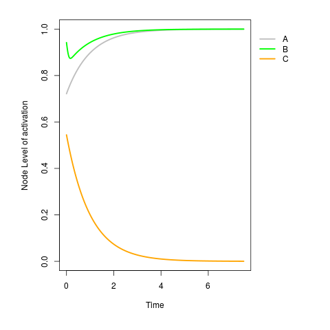
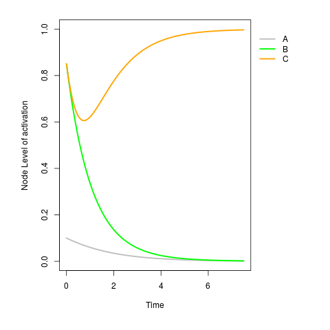
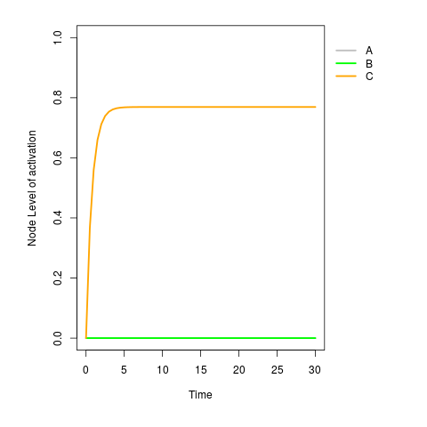
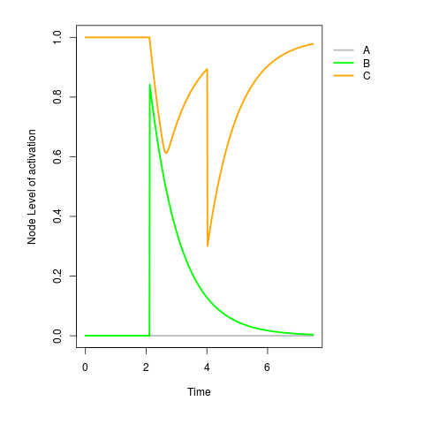
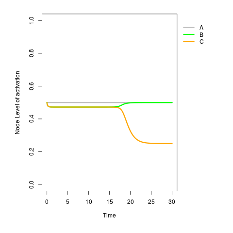
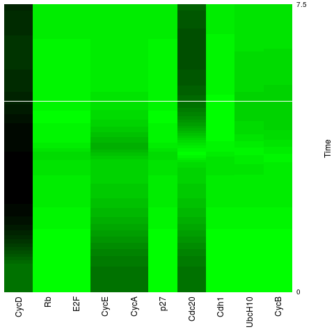

Once we have a continuous Regulatory Network (RN) squad object, simulations can be carried out. The squad() function was designed to be a platform for setting simulation parameters, performing simulations, and optionally plotting results. To make easier the process of running simulations squad() take several default options. To show this, you can easily generate a time serie plot by passing a "BooleanNetwork" or "squad" object without no other arguments as carried out in next lines.
> ## Loading network
> net <- loadNetwork.sq("cartoonNetwork.R")
>
> ## running simulation
> squad(net)

As no initial values were given, squad() by default starts at one randomly choosen point sampled from unit multidimensional square [0,1]n, where n is the number of nodes. However, SQUAD is also flexible and allows to define initial values and parameters for the simulation as well. In this section, we describe how to set up simulation squad() parameters.
SQUAD methodology consist of a set of n Ordinary Differential Equations [1]. Each differential equation defines the level of activation of a node depending on the state of activation of its regulators. SQUAD ODEs have two main parameters hi and γi, representing gain of the sigmoid curve and the decay rate for the molecule, respectively. By default, hi = 50 and γi = 1. However, these parameters along with initial conditions can be defined using squad() as follows:
> ## setting initial conditions and parameters
> initialState <- c(0.1,0.85,0.85)
> h <- rep(5,length(net$genes))
> gamma <- rep(1,length(net$genes))
> parameters <- list("h"=h,"gamma"=gamma)
>
> ## runnning simulation
> squad(net,initialState = initialState,parameters = parameters)

Note that parameters must be passed as a list of named vectors containing the values of length
n containing the values for all hi and γi. In this
simulation the initial values of the nodes were setted to (0.1,0.85,0.85). The simulation
time duration and integration length interval can be adjusted using the timePeriod and lengthInterval
parameters as coded next following the previuos example.
> squad(net,
> initialState = initialState,
> parameters = parameters.sq,
> timePeriod = 30,
> lengthInterval = 0.5)

Note that the virtual time of the simulation is now from 0 to 10 and
the time intervals are now (= 0.5). In general, squad() integration methods can be
adjusted by passing ode() function arguments (with some exceptions, please see ?squad for details).
For more details about ode() function arguments see deSolve documentation here.
Node perturbations can mimic transitory extracellular signals or intrinsic gene expression noise.
SQUAD R package can be used to simulate transitory node perturbations. Perturbations most be setted up
by switching perturbations to TRUE and the specifying the type of event. Events are defined
as the same as in ode(), see deSolve documentation for details. Briefly, events are define as a dataframe containing the following named vectors:
In the next example, initial values are set up to a stationary state (A=0,B=0,C=1) and then
a perturbation in nodes A and B is given at times 2.1 and 4, respectively. The first perturbation consist in
replacing the value of B by 0.85 and the second is defined as the addition of -0.6 (in fact a sustraction) to
the value of C.
> initialState <- c(0,0,1)
> events <- data.frame("var"=c("B","C"),
"time"=c(2.1,4),
"value"=c(0.85,-0.6),
"method"=c("replace","add"))
> squad(cartoonNet,initialState = initialState,perturbations = TRUE,events = events)

As expected, at the beginning of the simulation the dynamic did not change because initial values are are stationary. Then, perturbations occur at defined times. However, perturbations vanish with time and system returns to the starting stationary state. Perturbation events can be so defined in complex manners, to see more details about events definition please consult deSolve documentation.
Constant stimulus and gain/loss of function mutations can be simulated by fixing node values. This
kind of simulation can be performed by using squad() using its parameter fixed.
A numeric vector must be passed to this parameter named according to the nodes to be fixed.
The following code exemplifies this.
> ## fixing A to 0.5
> fixed <- c("A"=0.5)
> initialState <- c(0,0.85,0.5)
>
> ## running simulation
> squad(cartoonNet,initialState = initialState,fixed = fixed)
In the previous code, the node A was fixed to a 0.5 low value.
Under these circunstances a new stationary state with intermediate values of 0.5
for all nodes is found as can be seen from the trajectory plot.
There are various continuous formalisms to interpolate BRN models. For a review of them, see. SQUAD includes normalized hill cubes (NHC) formalism which has some advantages regarding differentiability propierties. NHC ODE equations have three parameters n, k, and γ. The parameters n and k determines the slope of the curve and the boolean thresold, respectively. Parameter γ as in squad formalism determines the molecular decay rate. Simulation formalism can be switched to NHC by setting the parameter type="normHillCubes" as exemplified in the next code.
> initialState <- c(0.5,0.5,0.5)
> n <- rep(50,length(cartoonNet))
> k <- rep(0.5,length(cartoonNet))
> gamma <- rep(1,length(cartoonNet))
> parameters.hc <- list("n"=n,"k"=k,"gamma"=gamma)
> squad(cartoonNet,
initialState = initialState,
parameters = parameters.hc,
timePeriod = 30,
type = "normHillCubes")

In the simulation, all node valuess were setted to 0.5. The parameters n, k and γ were
defined as 50, 0.5 and 1 for each node. Note that, as can be seen intuitively from the graph of the
network given in Section 4.1, A is an input of the network and therefore does not depends on
B and C. B and C
negatively regulate each other, hence they are expected to cancelled out each other activation
or stay in a balanced intermediate value in which none of the can inhibit the other. However,
A is positve regulator of B and therefore, it is expected that A skew the
balanced state of A and B, to a new one in which B is more active which is the observed behavior
in simulation. One interesting exercise, would be to run the simulation changing type (and parameters)
to default to see what happen in the squad formalism.
In the previous sections, time series plots has been used. However, time series are not good at
plotting the dynamic of several nodes at the same time. Plotting more than a dozen nodes values
in a single time serie plot tends to make harder to distinguish color coding. Additionally, curves
tends to overlap. Heatmaps are more flexible for plotting several node factors. The dynamic of the
network can be plotted using heatmaps by setting the parameter plot="heatmap" in squad()
function. In the next plot we use cellcycle BooleanNetwork.
> data("cellcycle")
> initialState <- rep(0,length(cellcycle$genes))
> squad(cellcycle,
initialState = initialState,
plot = "heatmap",
colorLevels = 30)

The grading of the color heatmap can be tunned by adjusting colorLevels parameter.
Although, heatmap is a very usefull tool to visualize network dynamics this method has also caveats
when plotting for example network with few nodes and when the time period is too long. For that reason,
plot parameter also includes the option "raw". When this option is used the output of squad() is a
matrix raw data, so the user can then choose other plot R functions packages, for example ggplot2.
> dynamic <- squad(cellcycle,initialState = initialState,plot = "raw")
> dynamic
time CycD Rb E2F CycE CycA p27 Cdc20 Cdh1 UbcH10
[1,] 0.00 0 0.000000000 0.000000000 0.000000e+00 0.000000e+00 0.000000000 0.000000e+00 0.000000000 0.000000000
[2,] 0.01 0 0.009950248 0.009950248 4.455076e-14 4.455076e-14 0.009950248 4.455076e-14 0.009950248 0.009950248
[3,] 0.02 0 0.019801489 0.019801489 2.055319e-13 2.055319e-13 0.019801489 2.055319e-13 0.019801489 0.019801489
[4,] 0.03 0 0.029554708 0.029554708 5.541270e-13 5.541270e-13 0.029554708 5.541270e-13 0.029554708 0.029554708
[5,] 0.04 0 0.039210759 0.039210759 1.188807e-12 1.188807e-12 0.039210759 1.188807e-12 0.039210759 0.039210759
[6,] 0.05 0 0.048770771 0.048770771 2.302742e-12 2.302742e-12 0.048770771 2.302742e-12 0.048770771 0.048770771